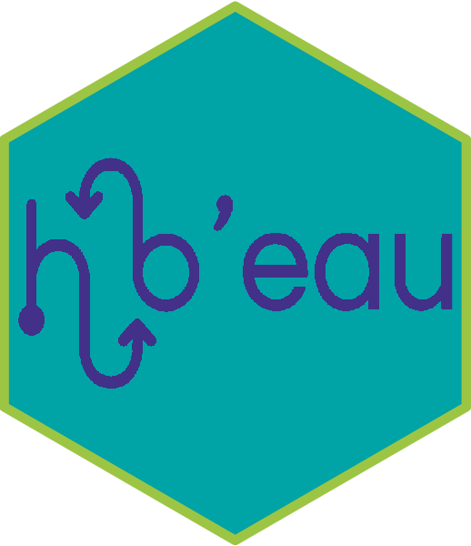

‘hubeau’ is an R-package proposing a collection of function to help retrieve data from the French national databases on water: https://hubeau.eaufrance.fr
Installation
# Install released version from CRAN
install.packages("hubeau")
# Install development version from GitHub:
# install.packages("remotes")
remotes::install_github("inrae/hubeau")Get started
The ‘hubeau’ package provides functions for ‘Hub’Eau’ APIs and their related endpoints. These functions are named as follow: hubeau::get_[API]_[endpoint].
Currently available APIs and related endpoints are listed below.
API “Ecoulement des cours d’eau”
API documentation: https://hubeau.eaufrance.fr/page/api-ecoulement
Available functions:
-
get_ecoulement_stations: site data and locations -
get_ecoulement_observations: flow observations collected during campaigns -
get_ecoulement_campagnes: observation campaign information
API “Hydrométrie”
API documentation: https://hubeau.eaufrance.fr/page/api-hydrometrie
Available functions:
-
get_hydrometrie_sites: hydrometry sites (can contain several stations) -
get_hydrometrie_stations: hydrometry stations -
get_hydrometrie_observations_tr: hydrometry water level and discharge time series -
get_hydrometrie_obs_elab: hydrometric elaborate observations (daily/monthly mean flow)
API “Indicateurs des services”
API documentation: https://hubeau.eaufrance.fr/page/api-indicateurs-services
Available functions:
-
get_indicateurs_services_communes: performance indicators by commune -
get_indicateurs_services_indicateurs: performance indicators by indicator -
get_indicateurs_services_services: performance indicators by commune for each service
API “Piézométrie”
API documentation: https://hubeau.eaufrance.fr/page/api-piezometrie
Available functions:
-
get_niveaux_nappes_chroniques: archived time series of piezometric stations -
get_niveaux_nappes_chroniques_tr: real-time time series of piezometric stations -
get_niveaux_nappes_stations: piezometric stations
API “Poisson”
API documentation: https://hubeau.eaufrance.fr/page/api-poisson
Available function:
-
get_poisson_operations: sampling operations carried out at stations measuring the quality of rivers -
get_poisson_observations: fish observations made during sampling operations -
get_poisson_indicateurs: the IPR and IPR+ indicators calculated from fish observations -
get_poisson_stations: stations measuring the quality of rivers
API “Prélèvements en eau”
API documentation: https://hubeau.eaufrance.fr/page/api-prelevements-eau
Available functions:
-
get_prelevements_chroniques: time series of annual withdrawn volumes by device -
get_prelevements_ouvrages: withdrawal devices (can contain several withdrawal points) -
get_prelevements_points_prelevement: withdrawal points
API “Qualité de l’eau potable”
API documentation: https://hubeau.eaufrance.fr/page/api-qualite-eau-potable
Available functions:
-
get_qualite_eau_potable_communes_udi: links between “UDI” (Distribution units or networks) and communes -
get_qualite_eau_potable_resultats_dis: samples, analysis results and sanitary conclusions from the sanitary control of the distributed water commune by commune
API “Qualité des cours d’eau”
API documentation: https://hubeau.eaufrance.fr/page/api-qualite-cours-deau
Available functions:
-
get_qualite_rivieres_station: stations (measuring points) on rivers or water bodies where water samples have been taken for water quality analyses -
get_qualite_rivieres_operation: sampling operations carried out at the stations -
get_qualite_rivieres_analyse: physico-chemical analyses carried out on samples prepared during sampling operations at the stations -
get_qualite_rivieres_condition_environnementale: environmental conditions (air temperature, presence of leaves, moss, iridescence, etc.) observed during physico-chemical sampling operations
API “Qualité des nappes d’eau souterraines”
API documentation: https://hubeau.eaufrance.fr/page/api-qualite-nappes
Available functions:
-
get_qualite_nappes_stations: measuring stations for groundwater quality -
get_qualite_nappes_analyses: analysis results of quality measurement
API “Température des cours d’eau”
API Documentation https://hubeau.eaufrance.fr/page/api-temperature-continu
Available functions:
-
get_temperature_stations: temperature stations in French rivers -
get_temperature_chronique: river temperature time series
A complete documentation is available on the package website: https://inrae.github.io/hubeau/
Acknowledgements
The authors would like to thank the European Commission and the French National Research Agency (ANR) for funding in the frame of the collaborative international consortium IN-WOP financed under the 2018 Joint call of the WaterWorks2017 ERA-NET Cofund. This ERA-NET is an integral part of the activities developed by the Water JPI.